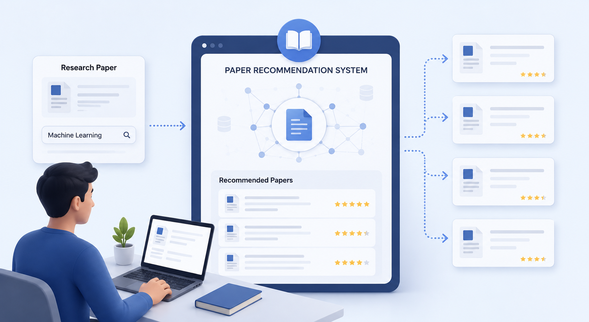
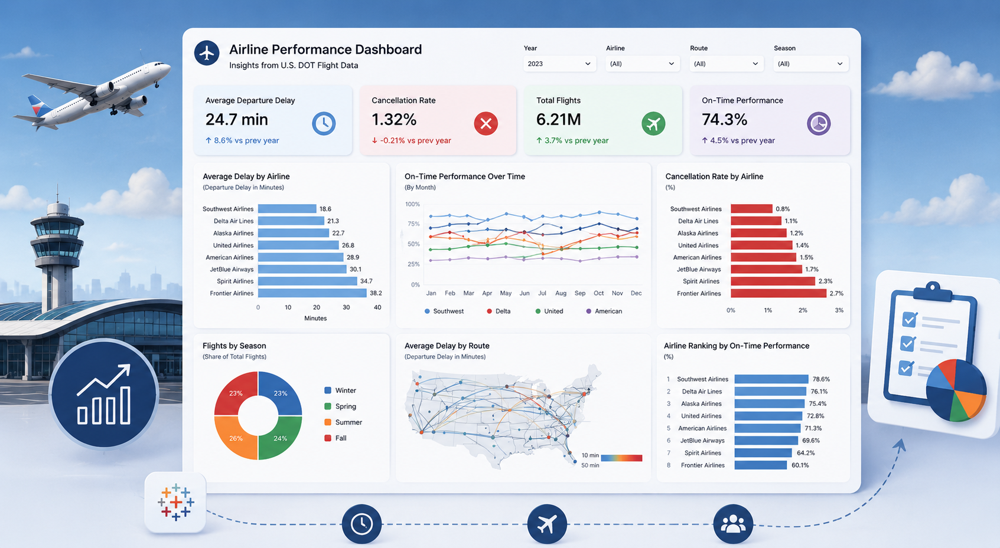
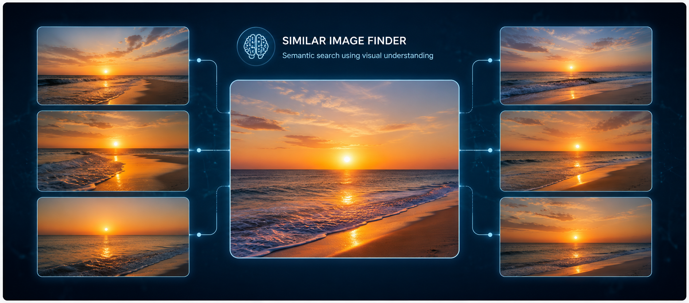

Where Curiosity Meets Code - Crafting Solutions That Matter
Business Analyst and Data Analyst with 3 years of experience across healthcare technology, consulting, and nonprofit work, and a recent graduate with an MS in Computer Science from the George Washington University.
I am drawn to problems where the data is messy and the answer is not obvious. I have built NLP and data pipeline solutions for healthcare claims at Optum, cleaned and analyzed CRM data for healthcare clients at PwC, and built predictive models and dashboards at a nonprofit. I work mainly in Python, SQL, Tableau, and Power BI, turning raw data into insights that guide leadership decisions. I also built CleanCare, a solo project joining public healthcare facility data into one platform with an AI chat assistant on top.
I am actively looking for full-time roles in Business Analysis, Data Analytics, Data Engineering, and Data Science, and I'm open to relocating anywhere in the U.S.
Master of Science in Computer Science
GPA: 3.77
Courses: Advanced Machine Learning, Neural Networks and Deep Learning, Cloud Computing, Database Systems II
Honors: SEAS Merit Award
A single CMS star rating hides a lot of real variation between healthcare facilities. I built CleanCare to join public CMS data on nursing homes, hospitals, and ambulatory surgical centers into one PostgreSQL database, so anyone can look past the star rating and see real numbers on staffing, ownership, and outcomes.

Researchers waste hours searching for relevant papers. I built a hybrid recommendation system that blends three different ranking signals across 23.4 million research papers and 278.6 million citation links to surface what actually matters.
Built a full data system around one real question, which airline is actually more reliable for your route. This card covers the engineering side, the pipeline that pulls, cleans, and stores the data, and powers a live self service tool.

Took the same underlying flight dataset and turned it into a clean, interactive Tableau dashboard built for a completely different audience, one that just wants to understand airline reliability at a glance, no code or query needed.
Built an analysis platform on top of the FDA's drug safety database, over 18 million real world adverse event reports across multiple years, to surface patterns that matter for patient safety.

Traditional image search often misses semantic similarity, matching on color or shape instead of what an image is actually about. I built a tool that finds visually and semantically similar photos using OpenAI's CLIP model, letting users upload an image or paste a URL and instantly get back related results from a large photo collection.
sneha.uppu3@gmail.com
Arlington, VA
(Open to Relocate)